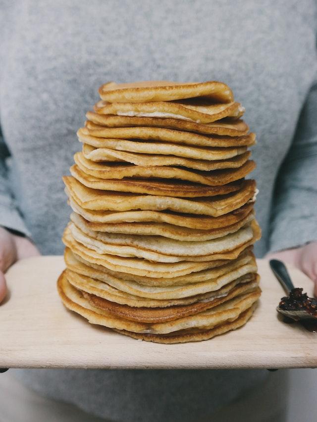

Pancakes

Description
Perfect pancakes are easier to make than you think. This pancake recipe produces thick, fluffy,
and all-around delicious pancakes with just a few ingredients that are probably already in your
kitchen (and it's so much better than the boxed stuff).
Steps
- Sift flour, baking powder, sugar, and salt together in a large bowl. Make a well in the center
and add milk, melted butter, and egg; mix until smooth.
- Heat a lightly oiled griddle or pan over medium-high heat. Pour or scoop the batter onto the griddle,
using approximately 1/4 cup for each pancake; cook until bubbles form and the edges are dry, about 2
to 3 minutes. Flip and cook until browned on the other side. Repeat with remaining batter.